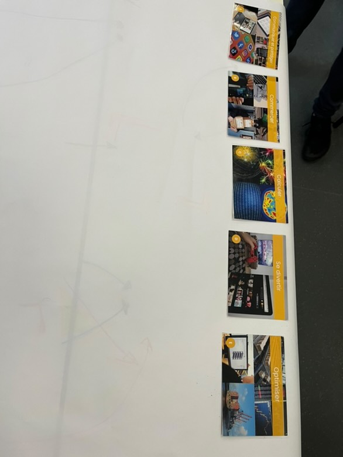
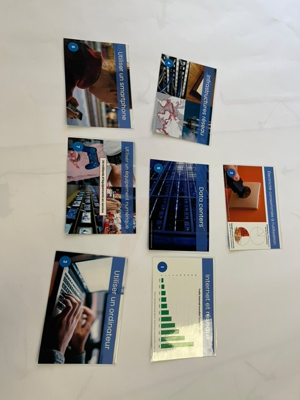
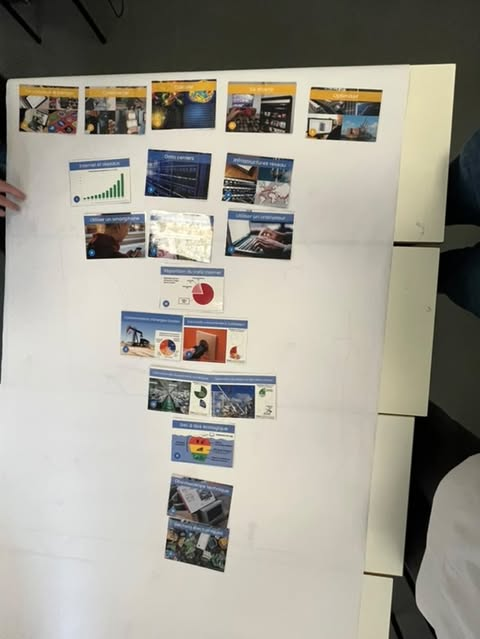
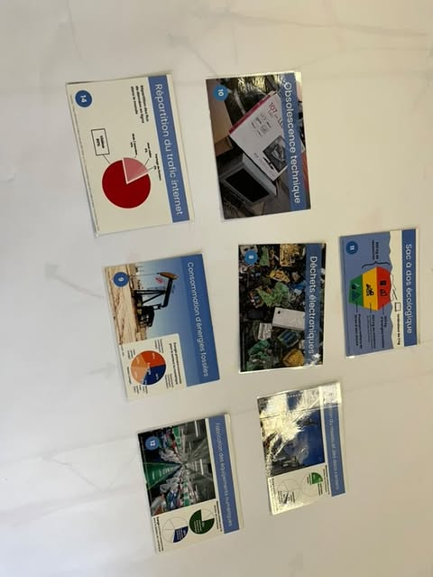
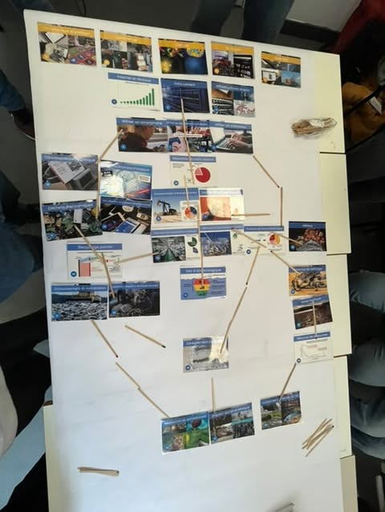
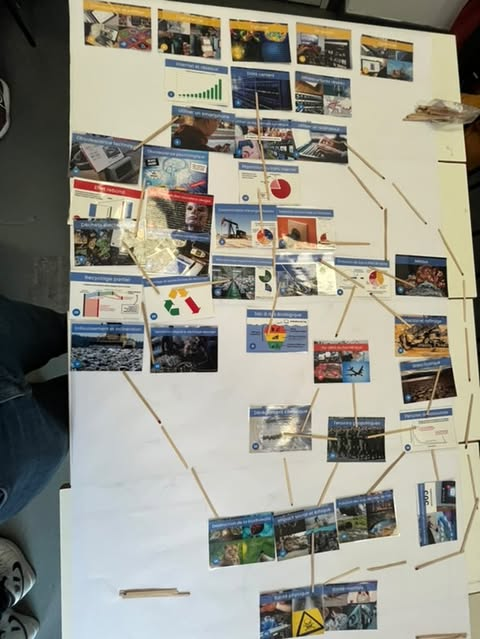
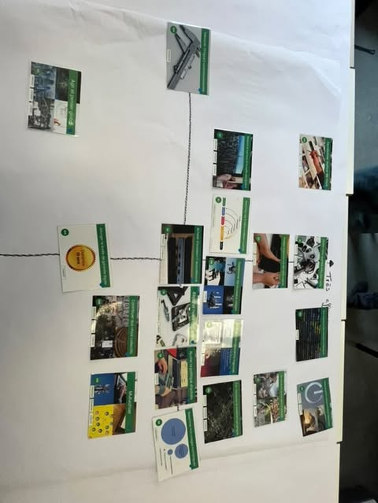

Les différentes étapes de la création de la fresque

Les 5 premières cartes de la fresque, posant les bases du travail.
Lors de l’atelier, nous avons travaillé sur les questions numériques de manière interactive avec des cartes. À chaque étape, il fallait facilement répondre aux questions sur tout, de l’infrastructure aux questions écologiques et éthiques.
J’ai préparé un bref résumé de chaque phase des travaux et de mes propres pensées à ce sujet.
Étape 1 : Introduction des premières cartes à analyser

Les premières cartes introduisant des concepts majeurs du numérique.
La première étape consistait à poser les bases de la fresque en introduisant des cartes qui représentent des aspects majeurs du numérique. Parmi ces cartes, nous avons trouvé des termes comme communiquer et partager, commercer,
calculer, se divertir, et optimiser. Chacune de ces cartes a été placée en lien avec les infrastructures essentielles, comme les réseaux, les data centers,
et l'internet, soulignant que ces technologies dépendent directement de la consommation d'électricité.
Étape 2 : Ajout de nouvelles cartes

Ajout de nouvelles cartes traitant des impacts environnementaux du numérique.
Dans la deuxième étape, nous avons ajouté 7 nouvelles cartes portant sur des sujets comme l'obsolescence technique, les déchets électroniques, la consommation d'énergies fossiles, et la répartition du trafic internet.
Ces cartes nous ont permis de faire le lien entre les usages numériques et leurs impacts environnementaux et économiques, mais aussi de comprendre comment les pratiques de consommation et de gestion des technologies influent sur la durabilité
de nos ressources.
Étape 3 : Ajout de nouvelles cartes sur l'extraction des ressources

Cartes sur l'extraction des ressources pour la fabrication des équipements numériques.
Pendant la troisième étape, nous avons ajouté sept nouvelles cartes sur l'extraction des ressources naturelles nécessaires à la fabrication des équipements numériques, comme le raffinage des ressources minérales. On a pris conscience des conséquences
écologiques liées à la production de ces équipements. Le lien entre l'extraction des ressources, la fabrication des appareils, et leur impact sur l'environnement ont été bien expliqués, faisant le lien avec les étapes précédentes.
Étape 4 : Conséquences environnementales et sociales

Les conséquences environnementales et sociales des pratiques numériques.
Dans la quatrième étape, nous avons abordé des conséquences des pratiques numériques, telles que la destruction de la biodiversité, les décharges sauvages, la pollution des sols, de l'eau et de l'air,
ainsi que le dérèglement climatique. Ces cartes nous ont permis de réfléchir aux impacts négatifs engendrés par la chaîne de production et de consommation des technologies, qui doivent être prises en compte.
Étape 5 : Impact sur la société et les comportements

Les impacts sociaux et comportementaux des changements numériques.
Dans la cinquième étape, nous avons placé 8 cartes traitant des impacts sociaux, géopolitiques et comportementaux du numérique, telles que les tensions géopolitiques, l'accélération des nouveaux usages, et
l'effet rebond. Ces cartes nous ont permis d'illustrer les conséquences des changements rapides causés par le numérique. En particulier, les conséquences sur la santé mentale et physique, ainsi que les
limites du recyclage, démontrant que certains progrès technologiques peuvent entraîner des effets indésirables dans d'autres domaines.
Diagramme des cartes
Enfin, la dernière étape a consisté à placer ces cartes sur un diagramme en fonction de leur facilité d'utilisation et de leur efficacité. Le but était de visualiser les compromis entre l'adoption de certaines
pratiques numériques et leurs résultats.

Les dernières cartes.
En conclusion, cet atelier nous a permis de créer une fresque dynamique des enjeux numériques, en reliant théorie et pratique. Chaque étape a renforcé notre compréhension de l'impact global des technologies numériques sur l'environnement comme
sur la société. En associant chaque carte, nous avons pu dresser un tableau complet des défis actuels et des solutions. Ce travail de groupe a également favorisé une réflexion collective sur la manière d'agir face à ces enjeux pour créer
un avenir plus durable.